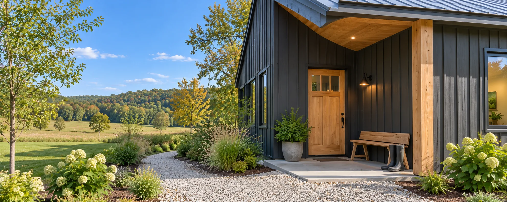

Custom home
The Long House in Leiper’s Fork
A long, low family home on twenty acres of open pasture.

About the project
What the owners needed
The owners wanted views from every main room, an entry that could handle muddy boots, and a house that sat low on the land.
How we built it
We put the mudroom and pantry right by the driveway, lined up the family rooms along the view, and built a covered terrace on the garden side under a galvanized metal roof.
This is an illustrative project story for a customizable contractor template.
← Back to all projectsWhat the owners said
“Drew asked about the driveway, the septic and the power as early as he asked about the floor plan. On our land, that mattered more than anything.”Illustrative client review